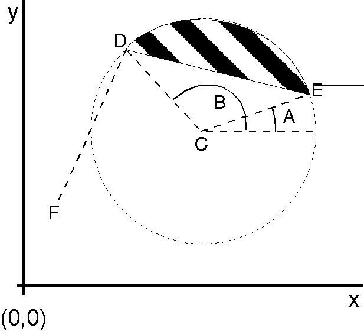

The following steps describe how to use GpiPartialArc to draw a closed shape bounded by a chord and an arc:
To fill this partial arc with the current area-fill pattern, you can bracket the GpiPartialArc call of step 4 with GpiBeginArea and GpiEndArea. You should not call GpiBeginArea before step 2.
The effect of this sequence is shown in the following figure.
Closed Figure Bounded by Chord and Arc
The circle in the preceding figure is defined by the current arc parameters. Point F is the current position, and point C is the center of the arc as specified with the first GpiPartialArc call. The first GpiPartialArc call-with the line type set to LINETYPE_INVISIBLE-moves the current position to point D. The second GpiPartialArc call-with the line type set to LINETYPE_SOLID- draws the chord from the current position (point D) to the start point of the arc (point E), and draws arc ED.
The partial arc has been defined within an area and has been filled with the current area-fill pattern.
The following figure shows how to draw a "pie slice". like the one drawn in the previous figure.
#define INCL_GPIPRIMITIVES
#include <os2.h>
void Figure_516(){
HPS hps;
POINTL ptlCenter = {2L, 2L}; /* Coordinates of the center point */
FIXED fxAngleA = 20L; /* Angle A in degrees */
FIXED fxAngleB = 130L; /* Angle B in degrees */
GpiSetLineType(hps, LINETYPE_INVISIBLE);
/* Set position to start drawing the arc at angle B. */
GpiPartialArc(hps, &ptlCenter, MAKEFIXED(1, 0), fxAngleB, 0L);
GpiSetLineType(hps, LINETYPE_ID);
GpiBeginArea(hps, BA_BOUNDARY | BA_ALTERNATE); /* Fill the area */
GpiPartialArc(hps, &ptlCenter, MAKEFIXED(1, 0), fxAngleA, fxAngleB-fxAngleA);
GpiEndArea(hps); /* Cancel area-fill */
}